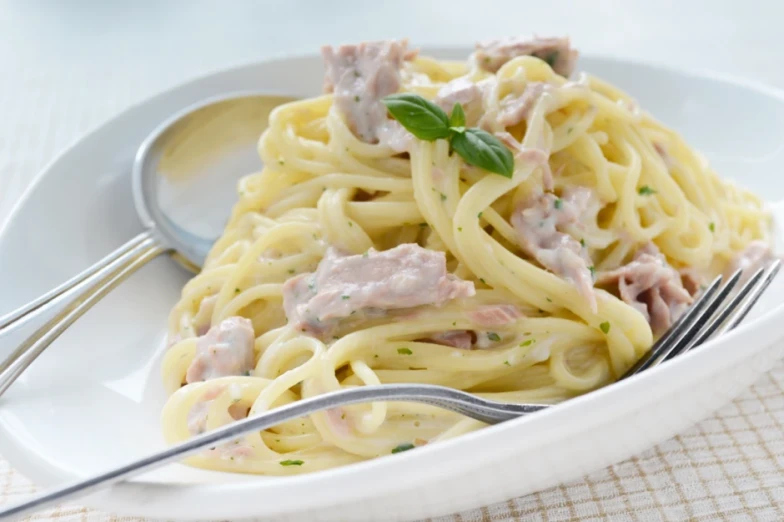

Spaghetti with tuna sauce

Description
If you want to eat fast, but don't want to eat fastfood. This dish is prepared in 10 minutes and it's super tasty
Ingredients
- 2 cans of tuna
- 200ml cream
- ½ onion
- 1 glove of garlic
- 3 peperonis
- salt
- pepper
- spaghetti
Steps To Make It
- Boil a pot of water
- When the water is boiling add the spaghetti.
- Cut onions the garlic and the peperonis.
- Fry them in a pan
- Add the tuna to it
- Add the cream
- When the spaghettis are ready the sauce also is ready